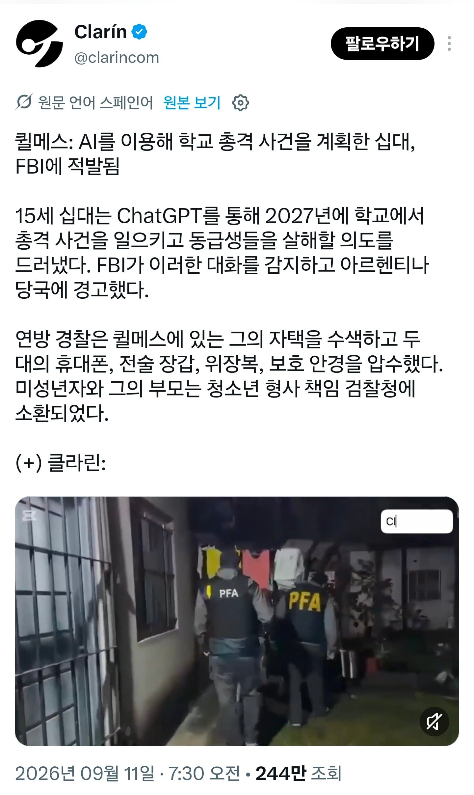
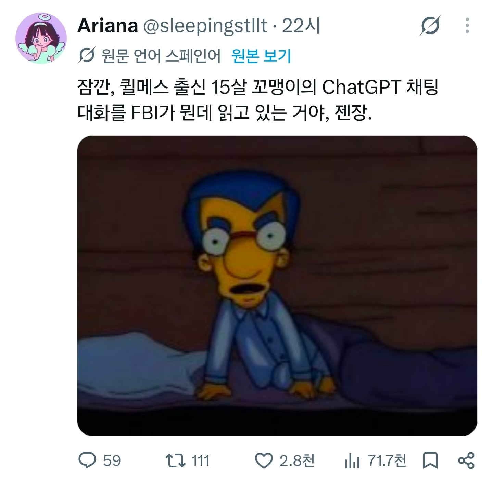

시발 좀 무섭긴 하네


시발 좀 무섭긴 하네
이거 자동 통보는 아니고 내가 기사들 읽어보고 파악한 바로는
1. 위험한 대화를 한다고 AI가 판단하면 자동으로 계정 정지상태 돌입후 검토 요청 사인을 관리자한테 보냄.
2. 관리자가 직접 해당 대화내역을 읽어보고 심각성에 따라 정지 해제나 추가 검토를 판단
3. 추가 검토시에는 더 많은 인원이 모여서 대화내역을 읽어보고 검토. 이쯤오면 보통 해제는 없고 이걸 관계당국(경찰이나 마약단속국 등)에 신고할거냐 뭉겔거냐 정도의 검토
4. 3번에서 이 대화내역이 실제 실행할 위험한 범죄에 대한 계획수립이라고 판단되면 관련 대화내역을 정리하여 관계당국에 신고 및 제출. 관계당국은 이 단계에서 대화내역을 입수.
몇몇 개붕이가 걱정하는것처럼 막 실시간으로 신고하거나 정부가 마음대로 들여다보고 그런건 아니긴 함.
윗댓 말대로 3번 단계에서 한번 총기난사 계획 안하겠지 하고 뭉겠다가 실제로 하는바람에 소송처먹고 좀더 적극적으로 신고하게 됨.
디아2 테러존 물은거 있었는데
테러 들어가서 볼거 아냐
지금 밖에 사이렌 소리들린다 나 무서웡
"어느나라언어야" "한국입니다" "거긴 총이없어 패스"
Ai에게 항문자위 절정 스팟 같은것만 물어보면
안전이라는거네 ....
백악관 테러 계획 짜볼까 연락 올라나
다행이구만
이런건 올바른 사생활 침해라고 본다
그냥 착하게 사세요
카톡이든 AI든 유튜브 검색이든
정부가 다 보고있습니다
착하게 남 해치지 않고살면 됩니다